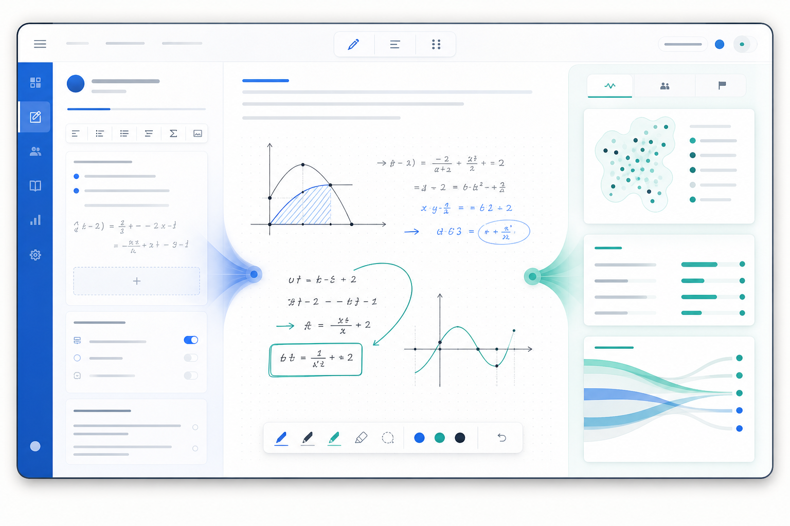

The MyTA assignment loop
Keep AI inside the learning process you designed.

InstructorSet the assignment context
StudentGuide the work, not the answer
InstructorSee where support is needed
Instructor-approved context can make support more relevant, but AI can still be wrong. Students remain responsible for their work, and instructor judgment remains essential.